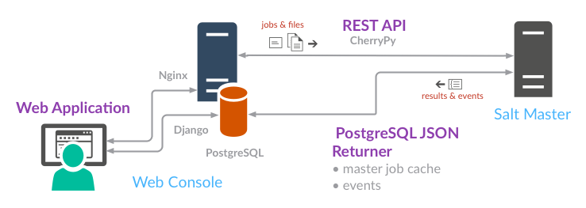

SaltStack Enterprise Web Console uses three primary components to manage your SaltStack infrastructure:
The REST API is used to initiate state and orchestrate runs, transfer files, and authenticate users against the external authentication system on each Salt Master.
The PostgreSQL JSON returner is used to send job results and events to the SaltStack Enterprise Web Console database.
The Web application connects to the database to retrieve job results, Salt Minion status, and other data for management and reporting.
